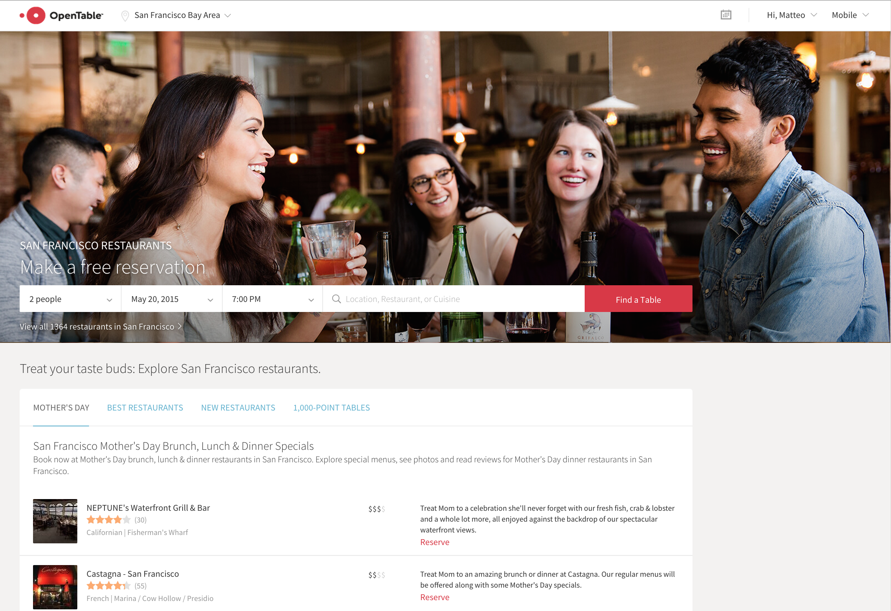

OpenComponents workshop
 Grab your
Grab your  we are going to Code here.
we are going to Code here.
But coding is not mandatory, you can just listen and watch.
If you want to code, you will need 0.10.40 <= node < 6 and a laptop with any editor.
While you wait, then install oc: [sudo] npm i -g oc


Grab your we are going to Code here.
But coding is not mandatory, you can just listen and watch.
If you want to code, you will need 0.10.40 <= node < 6 and a laptop with any editor.
While you wait, then install oc: [sudo] npm i -g oc
@matteofigus
Coding, technology, conferences
London, UK
OpenTable
With me today:
@JankowiakMaria@antwhite
Why are we here
- Introduction
- Quick demo
- Workshop
- Happy ending
What is an OpenComponent?
<html>
<body>
...
<oc-component href="//oc-registry.com/component/1.X.X/?a=b">
<div>hello John Doe</div>
</oc-component>
...
<script src="//oc-registry.com/oc-client/client.js">
</script>
</body>
</html>
Still the same component
$ curl https://oc-registry.com/component/1.X.X/?a=b
{
"href": "https://oc-registry.com/component/1.X.X/?a=b",
"version": "1.0.0",
"requestVersion": "1.X.X",
"html": "<div>hello John Doe</div>",
"type": "oc-component",
"renderMode": "rendered"
}Components in action
Components in action

The header example
$ curl https://oc-registry.internal.com/header/1.X.X/?userType=Admin&country=UK -H Accept-Language:ja-JP
{
"href": "http://components-789/header/1.X.X?userType=Admin&country=UK",
"html": "<div><img src=\"//srs.opentable.com/logo.jpg\" />...</div>"
}
github.com/opentable/oc

github.com/matteofigus/oc-workshop
Getting started
$ npm install -g oc
$ mkdir components && cd components
$ oc init test-component jade
$ echo 'div this is my component' > test-component/template.jade
$ oc dev . 3030
$ oc preview http://localhost:3030/test-component
github.com/matteofigus/oc-workshop
Ship it!
$ oc registry add http://oc-registry.herokuapp.com
$ oc publish /test-component
$ oc preview http://oc-registry.herokuapp.com/test-component
github.com/matteofigus/oc-workshop
Static resources
// template.jade
img(src=staticPath+'img/img.jpg')
// server.js
module.exports.data = function(context, cb){
cb(null, { staticPath: context.staticPath });
};
github.com/matteofigus/oc-workshop
Links and resources
- https://github.com/opentable/oc/tree/master/docs
- https://github.com/matteofigus/oc-components-examples
Should I use OC?
Enables people to create new components independently and publish them
Flexibility (unopinionated)
Granular ownership
Resiliency
Performance
Robustness
Serve as framework for experimenting and A/B testing new ideas in the front-end